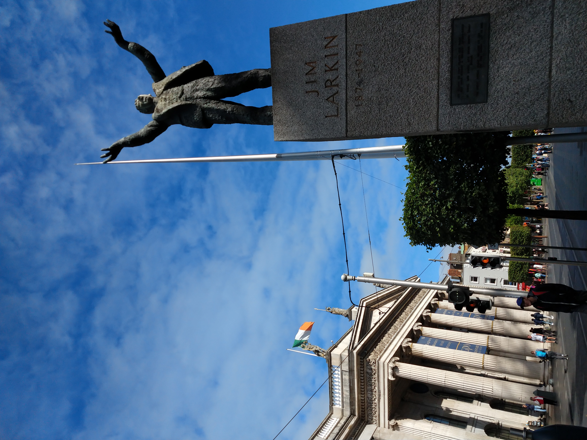
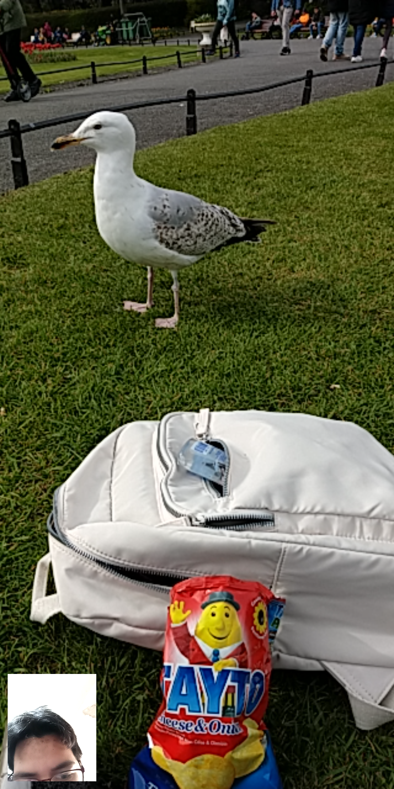
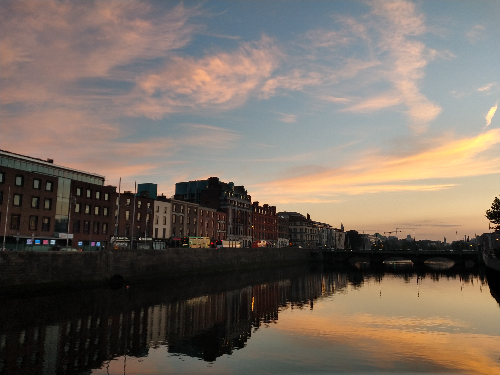
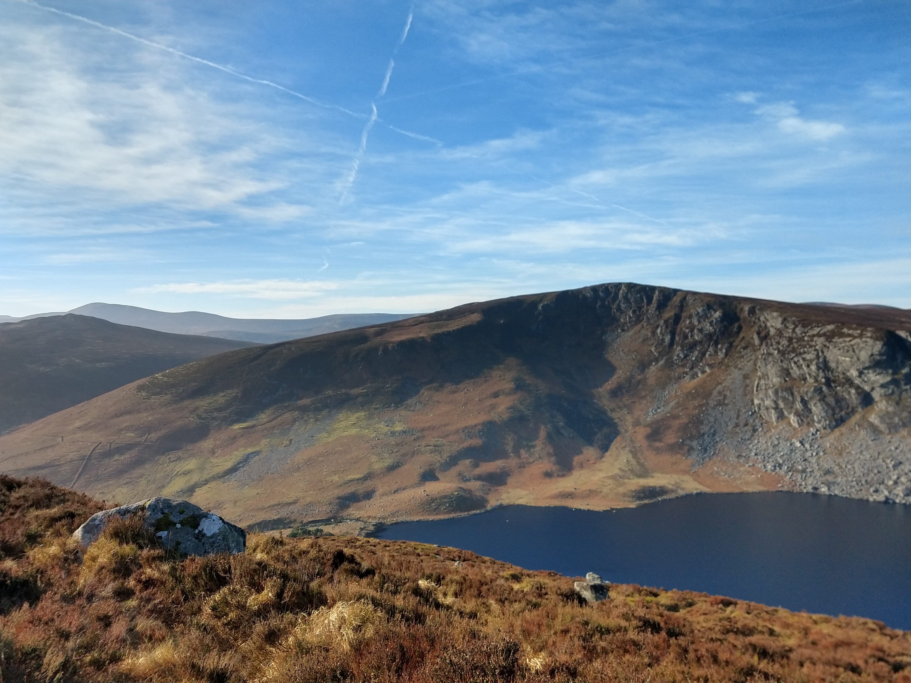
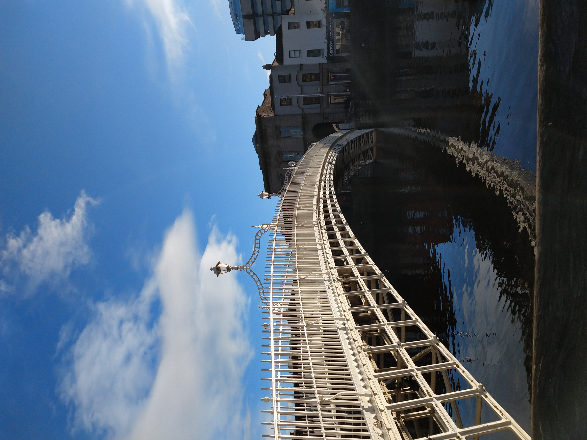

```html
```html
¿Cómo llegué a Irlanda?
Era 2019. Tenía 23 años.
En ese momento no imaginaba que, tres años después, me estaría subiendo a un avión rumbo a Irlanda para vivir una de las experiencias más importantes y transformadoras de mi vida.
Todo empezó cuando Karen, una compañera de mi trabajo a quien yo admiraba muchísimo, me contó que iba a renunciar porque se iría a Irlanda a estudiar inglés. Recuerdo perfectamente lo que pensé en ese momento:
“Qué sueño…”
Desde que entré a la carrera mi sueño era hacer un intercambio. Vivir en otro país y hablar en inglés. Por eso la idea me emocionaba muchísimo.
¿Y qué mejor que hacerlo de una forma inmersiva, lejos de casa y construyendo una nueva vida?
Era un sueño… pero se sentía enorme. Casi imposible.
Y aunque Karen probablemente nunca lo supo, sembró algo muy importante en mí. Empecé a preguntarme:
“¿Cómo le hizo? ¿Cuánto habrá ahorrado? Yo necesitaría años… quizá hasta mis 30 podría lograrlo.”
Pero desde ese momento, algo cambió en mi cabeza.
Y empecé a ahorrar. No sabía para cuándo, pero lo haría.
Vengo de una familia de recursos limitados. Nunca crecimos rodeados de lujos ni de grandes oportunidades económicas. Pero si algo me dieron mis papás y mi familia, fue el valor del esfuerzo y las ganas de estudiar para salir adelante.
Desde muy chica entendí que muchas veces no iba a tener las cosas fáciles, pero también entendí que podía construir algo diferente para mí si trabajaba por ello.
Después llegó 2020. La pandemia empezó a hacerse presente en México y, en medio de toda esa incertidumbre, renuncié a un trabajo que me gustaba mucho porque quería crecer y encontrar mejores oportunidades.
Afortunadamente conseguí otro empleo que, al principio, parecía cumplir con lo que buscaba, pero con el tiempo me di cuenta de que simplemente no era un lugar donde me sintiera feliz o plenamente identificada.
Sin embargo, mi mente seguía aferrada a una sola idea:
“Tengo que ahorrar para irme.”
Fue difícil al inicio porque en mi casa nunca hubo una cultura del ahorro. Y honestamente, tampoco tenía grandes conocimientos de finanzas. Pero sí tenía algo muy claro: estaba decidida.
Siempre he sido organizada, y eso se convirtió en mi mayor herramienta. Me hice un plan de ahorro con lo poco que sabía y me comprometí conmigo misma como nunca antes.
Cada semana hacía presupuestos.
Registraba cada gasto y cada ingreso con un gran detalle.
Fui disciplinada y constante.
El plan era simple: seguir el plan.
Semana tras semana.
Mes tras mes.
Y aunque nadie veía todo ese esfuerzo silencioso, yo sabía lo mucho que me estaba costando. Había días en los que quería rendirme. El trabajo no me hacía feliz y emocionalmente tampoco estaba pasando por un buen momento debido a todo lo que trajo la pandemia.
Mi salud física y mental comenzaron a pasar factura. Y llegó un momento donde entendí que tenía que elegirme a mí primero.
Entendí que, aunque agradecía tener trabajo y estabilidad, también era importante escucharme a mí misma. Ya no me sentía motivada ni emocionada con la vida que estaba llevando, y poco a poco empecé a sentir la necesidad de hacer un cambio mucho más grande para mí.
Así que renuncié a mediados de 2021. Y con eso, también sentí que estaba dejando de lado mi sueño de viajar.
Empecé nuevamente la búsqueda laboral.
Aunque ya tenía algunos ahorros, reconsideré si realmente podría viajar. Veía a muchos de mis compañeros creciendo profesionalmente, haciendo “lo que seguía” en la vida adulta… y yo pensaba que quizá eso era lo que también me tocaba hacer.
A veces sentía que querer irme era atrasarme o salirme del camino “correcto”. Pero en el fondo sabía que necesitaba hacer algo distinto para mí, algo que me retara, me sacara de mi zona de confort y me ayudara a crecer de una manera que no iba a encontrar quedándome donde estaba.
Seguía buscando opciones de trabajo, pero también sabía que ya tenía algo ahorrado y me preguntaba:
¿Debía seguir ahorrando?
¿O cuándo era realmente “el momento correcto”?
Me había convencido de que todavía no era suficiente.
Pero entonces, mi hermano dijo algo que terminó cambiándolo todo:
“¿Qué te falta? ¿Por qué no te vas ya con lo que tienes?”
“Vete, Sina. Y si algo sale mal, te regresas y ya.”
Nunca voy a dejar de agradecerle. La verdad es que ya estaba lista para el reto que quería enfrentar, pero todavía no podía creer que realmente fuera posible.
Entendí algo muy importante: más allá de viajar o vivir en otro país, mi verdadera meta era vencer un miedo.
El miedo al inglés.
El miedo a equivocarme.
El miedo a no sentirme suficiente.
Porque aunque siempre había querido aprenderlo, también me intimidaba muchísimo. Y sabía que, si quería crecer de verdad, tenía que enfrentar eso que tanto miedo me daba.
También entendí el valor de la red de apoyo. A veces, uno solo necesita que alguien le recuerde que sí puede intentarlo.
Y entonces pensé muchísimo en mi abuelita.
Ella migró a la Ciudad de México buscando una vida mejor, sin saber español —ni leer ni escribir—, dejando atrás todo lo que conocía y enfrentándose a un mundo completamente nuevo. Y aun así, salió adelante.
Pensar en ella me daba (y me da) fuerza.
Porque si ella había tenido el valor de empezar de cero en circunstancias mucho más difíciles, ¿cómo no iba a intentarlo yo también?
Y entonces sí.
Comencé de verdad.
Investigué escuelas, agencias, presupuestos, fechas, vuelos, alojamientos, requisitos… hice todo un merequetén, como diría mi mamá.
Pasé horas investigando, comparando, haciendo cuentas, ajustando planes y enfrentando miedos. Porque aunque estaba emocionada, también estaba aterrada.
Pero seguí.
Y para diciembre de 2021, ya tenía pagada mi escuela, mi alojamiento del primer mes, mis vuelos… y también tenía algo mucho más grande:
La certeza de que había sido capaz de cumplir un sueño que durante años vi imposible.
Ya tenía la fecha de mi vuelo a Irlanda para 2022, justo después de mi cumpleaños 26.
¿Lo demás?
Es historia. Y te invito a descubrirla.





